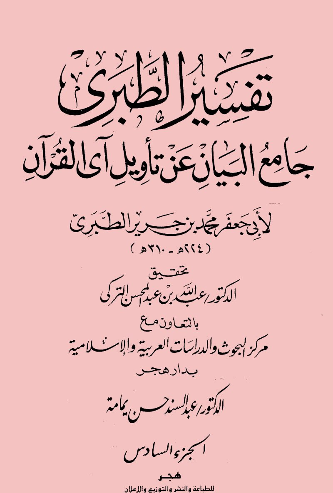
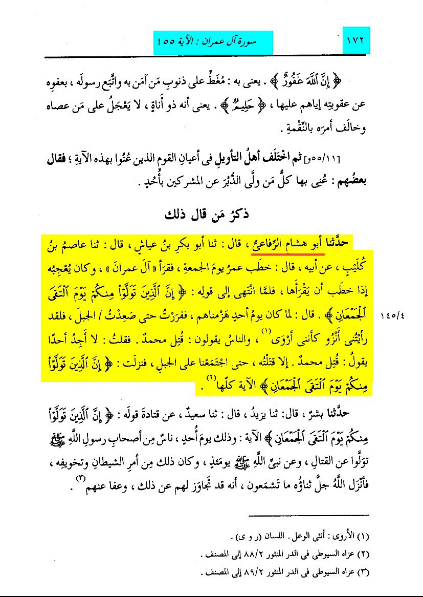
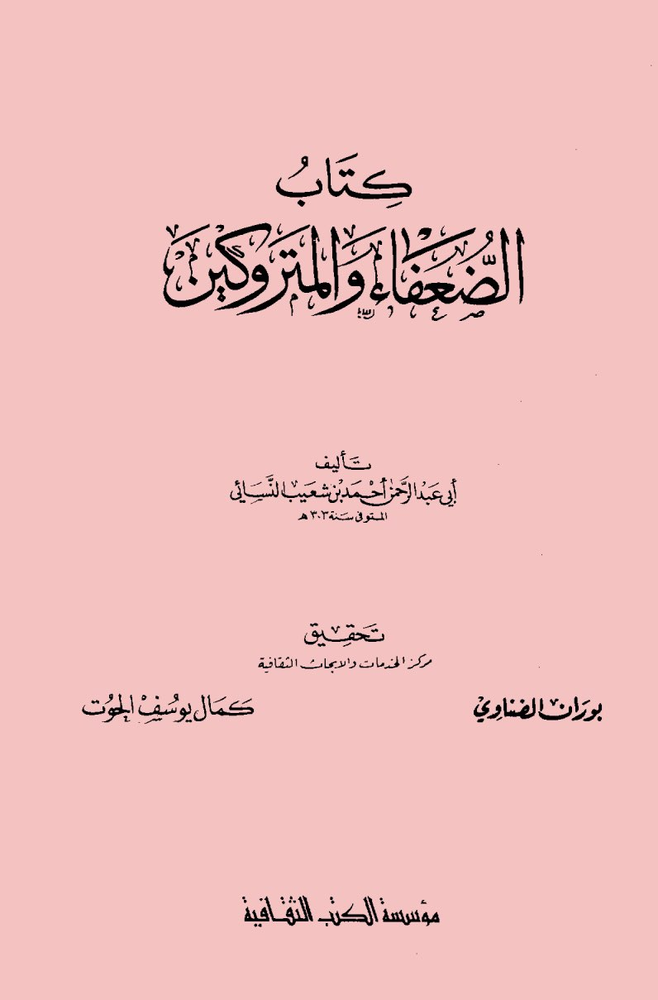
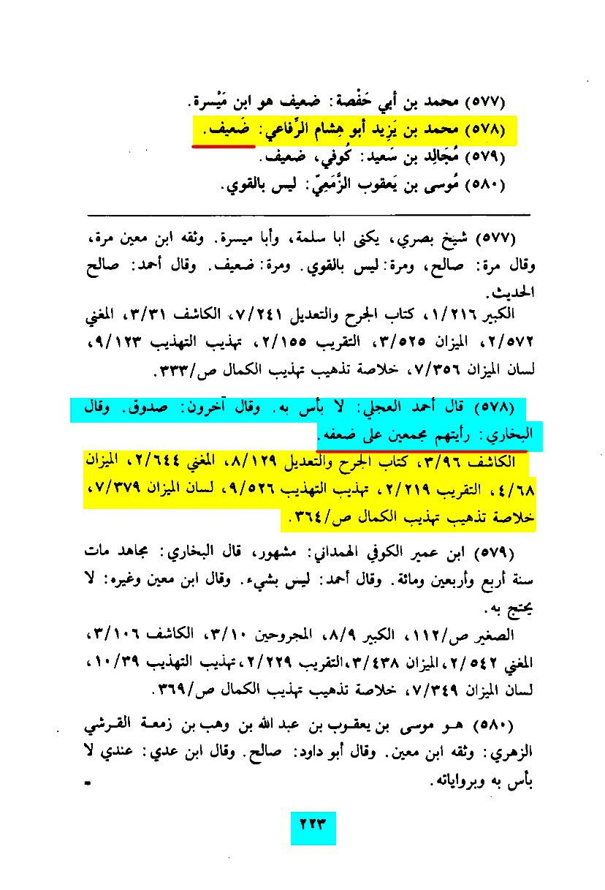
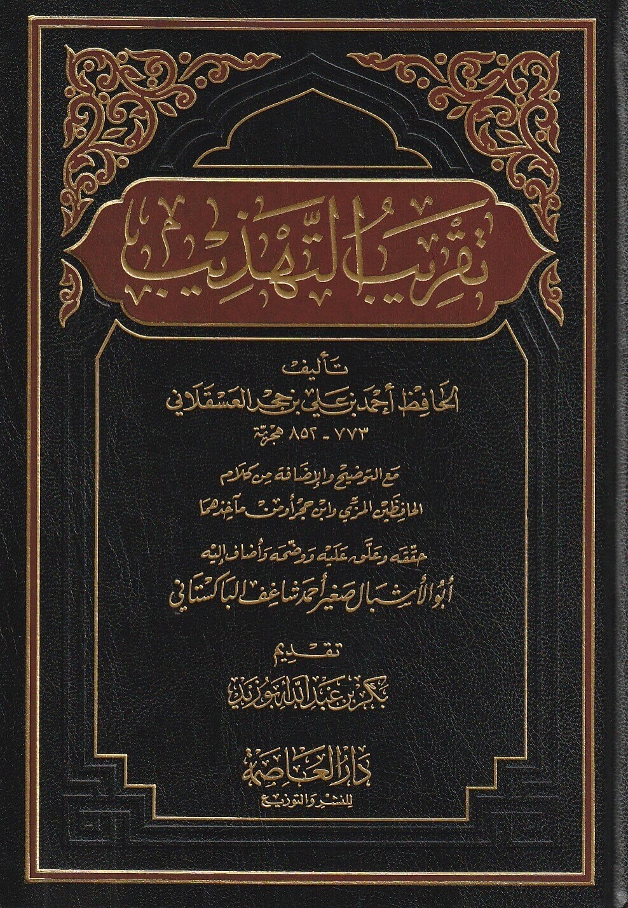
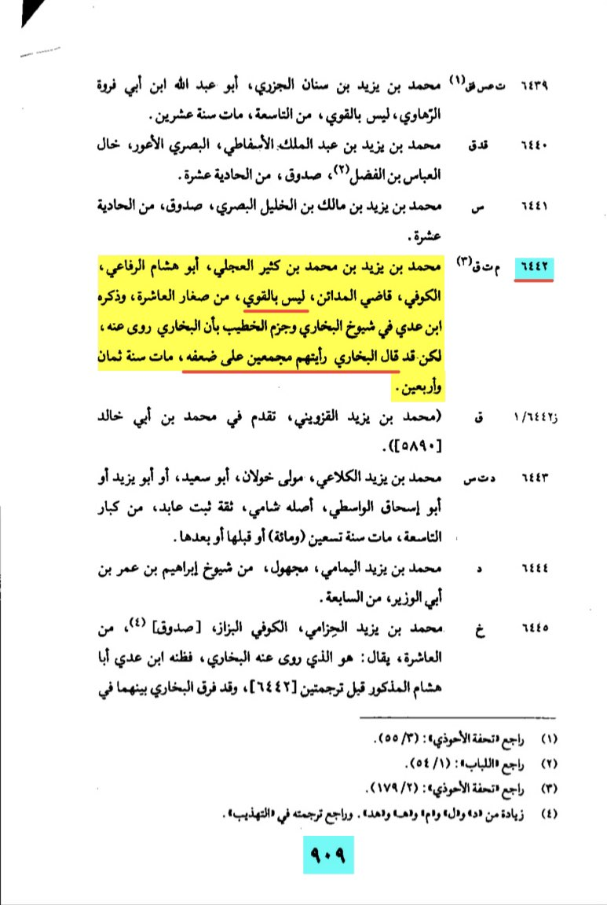

So this is the narration the rafidha quote to ‘prove’ that Umar Bin Al-Khattab ran from battle
As you can see i have placed a red line under one of the narrators called Abu Hishām Al-Rifa’i
Is he a reliable narrator?


Here is Kitab Al-Du’afa wal Matrukēn by Imam Abu ‘Abd Al-Rahman Bin Shu’ayb Al-Nasā’i
(the author of Sunan Al-Nasa’i) He says on page 223 that Abu Hishām Al-Rifa’i is weak.
And he quotes Imam Al-Bukhāri saying: ”I saw an agreement (amongst the scholars) over his weakness“

